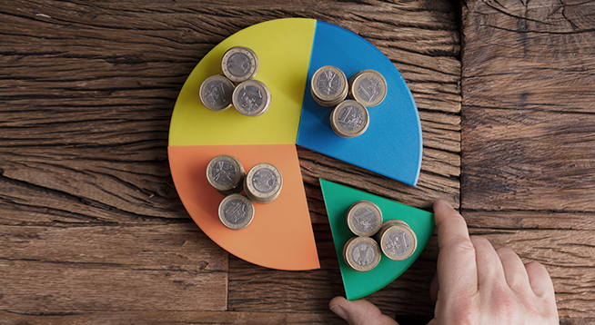

#부분환매
갑자기 목돈이 필요한 상황, 가입한 펀드를 해지하자니 꾸준히 적립한 게 아까운데요.
펀드는 일반 은행 예적금처럼 전체를 해지할 필요는 없습니다.
필요한 금액만큼만 환매하는 것도 가능하기 때문이에요.
환매는 필요한 만큼, 수익률은 그대로!
일반적인 공모 펀드라면 투자 금액이나 투자 기간이 정해져 있지 않기 때문에
원한다면 언제든지 부분 환매
를 할 수 있어요. 예금과 적금이 중도 해지를 하면 만기 때보다 낮은 금리가 적용되는 것에 비해
펀드는 나머지 금액으로 지금까지 쌓은 수익률을 유지
할 수 있다는 게 큰 장점입니다.

부분 환매는 어떨 때 하나요?
시장 상황과 재테크 계획에 따라서도
부분 환매를 활용
하는 건 어떨까요?
투자금을 분산하고 싶거나 목표 수익을 달성한 후에 일부를
현금화하고 싶을 때
등 다양한 상황에서 부분환매를 이용한다면 자산 관리가 조금 더
수월할 거예요. 혹은 하락장에서 손실을 입었을 때 부분 환매를 통해
손실을 최대한 방어할 수도 있겠습니다.
부분 환매 시 주의사항은?
펀드에
환매 수수료가 있는지 확인하는 게 필수
입니다.
환매 수수료는 장기간 투자를 장려하기 위해 정해진 기간 이내에 환매하는 경우 수익의 일부를 수수료로 가져가는
시스템
인데요. 투자한 원금에서 손실이 있었다면 환매 수수료는 부과되지 않는다는 점도 확인해 두세요.
가입할 때 꼼꼼하게 확인하자
지금까지 부분 환매와 환매 수수료에 대해서 알아보았는데요.
모든 펀드에 환매 수수료가 존재하는 건 아닙니다.
내가 가입한 펀드에 환매 수수료가 있는지, 부과 기간은 어떻게 되는지 꼼꼼하게 따져야겠죠?